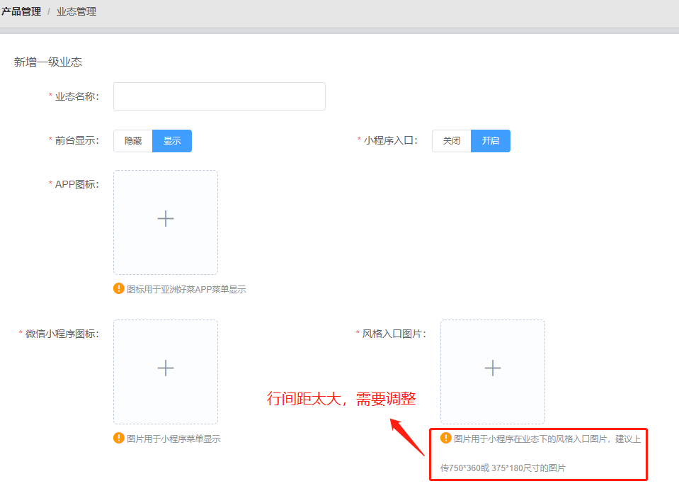
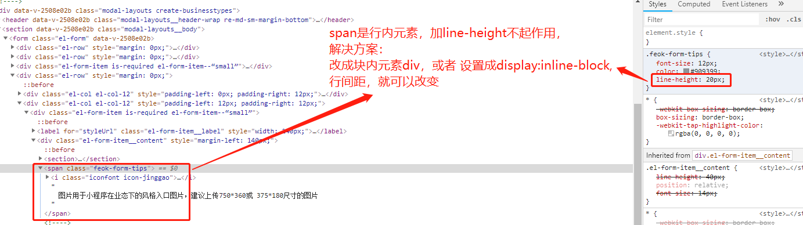

一、行内元素和块级元素的区别和他们的特点是什么？
块级元素会独占一行,默认情况下,其宽度自动填满其父元素宽度.
行内元素不会独占一行,相邻的行内元素会排列在同一行里,直到一行排不下,才会换行,其宽度随元素的内容而变化。另外：
- 1、块级元素可以设置width,height属性。
- 2、行内元素设置width,height属性无效，它的长度高度主要根据内容决定。
- 3、块级元素即使设置了宽度,仍然是独占一行。
- 4、块级元素可以设置margin和padding属性。
- 5、行内元素的margin和padding属性,水平方向的padding-left,padding-right,margin-left,margin- right都产生边距效果,但竖直方向的padding-top,padding-bottom,margin-top,margin-bottom却不会产生边距效果。
- 6、块级元素对应于display:block。
- 7、行内元素对应于display:inline。
- 8、如果想让元素同时具备块级和行内元素的特性，可以设置display:inline-block。
二、常用的行内元素和块级元素有哪些？
常用行内元素：a、b、span、img、input、select、label、em、button、textarea
常用块级元素：div、ul、li、dl、dt、dd、p、h1-h6
注：html中有一类元素比较特殊，虽然他们属于行内元素，但是他们是可以设置宽高的，如img、input、select、textarea、button等，他们被称为可置换元素。他们区别一般inline元素是：这些元素拥有内在尺寸,他们可以设置width/height属性。他们的性质同设置了display:inline-block的元素一致。
三、结合A网项目

